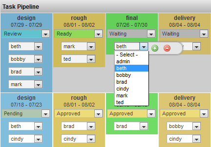

The Task Status Edit column is used to display the status of all tasks for the item. It also provides conveniences such as changing the status of the task and the assigned user.

|
Name |
Task Element Widget |
|
Common Title |
Task Status Edit |
|
Class |
tactic.ui.table.TaskElementWdg |
|
Category |
Common Columns |
|
TACTIC Version Support |
3.0.0 + |
|
Required database columns |
none |
Once this column is added into the view, the drop down list can be used to change the status. In addition, this column also displays the process, schedule and the assigned user.
This widget can be added using the Column Manager and can be found under the common columns as Task Status Edit.
Color
TACTIC provides the ability to assign each status its own color. Setting colors is handles from the Project Workflow (Pipeline) editor. Each process in a regular pipeline or a status pipeline can be assigned a color which will be used in this widget.

|
Bg Color |
status and process. Set what controls the background color of the task. Status sets the task color to be the same as the status color. Process mode sets the task color to be the same color of the process as set in the Workflow Editor. |
|
Status Color |
status and process. Set what controls the background color of the status drop down. Status sets the status drop down color to be the same as the status color. Process mode sets the status drop down color to be the same color of the process as set in the Workflow Editor. |
|
Context Color |
status and process. Set what controls the background color of the context grid. Status sets the context grid color to be the same as the status color. Process mode sets the context grid color to be the same color of the process as set in the Workflow Editor. |
|
Text Color |
Specifies the color of the task text using a color swatch. |
|
Show Process |
True or false. Displays the process of the task within the column. |
|
Show Context |
True or false. Displays the context of the task within the column. |
|
Show Dates |
True or false. Displays the time frame for the task. The schedule will display the start and end date. |
|
Show Assigned |
True or false. Displays the assigned user to the task. |
|
Show Track |
True or false.. Displays a button on each task which displays the last status and the user who changed it. |
|
Show Labels |
True or false. Displays the label of the pipeline's process. |
|
Show Border |
all, one-sided, none. All displays a border around each task. One-sided displays a border around one one side of the task. None hides the border. |
|
Show Current Pipeline Only |
True or false. Displays tasks for the current pipeline only. |
|
Show Task Edit |
True or false. Displays a button which pops-up a window to edit the task info. |
|
Task Edit view |
Specify the Task view by which to edit the task information. |
|
Task Filter |
panel, vertical, horizontal: Layout orientation to display the list of tasks. |
|
Layout |
context only or process only: Displays only tasks for either the context or the process. |
|
Edit Status |
True or false. Allows the user to open the status drop down selection box for the status to change it. |
|
Edit Assigned |
True or false. Allows the user to open the status drop down selection box for the assigned user to change it. |